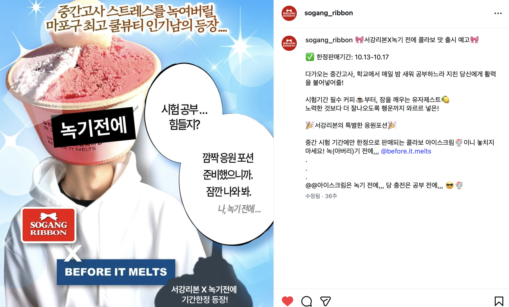
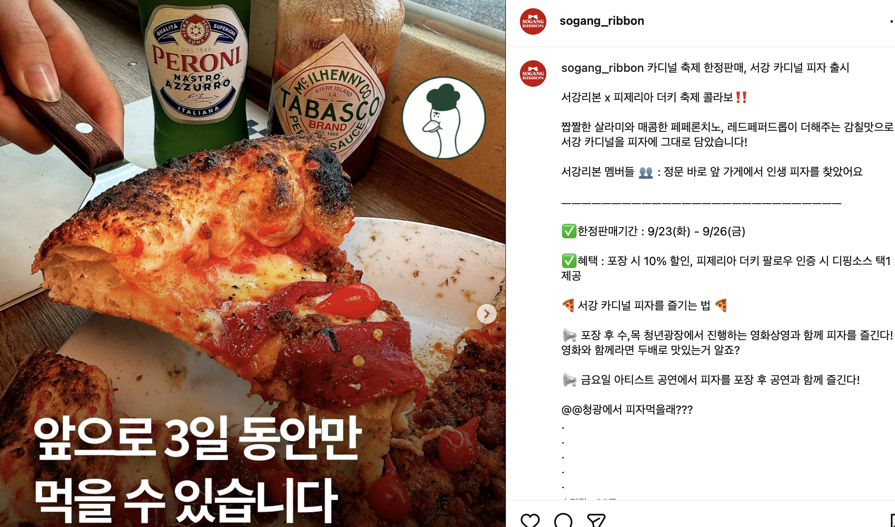
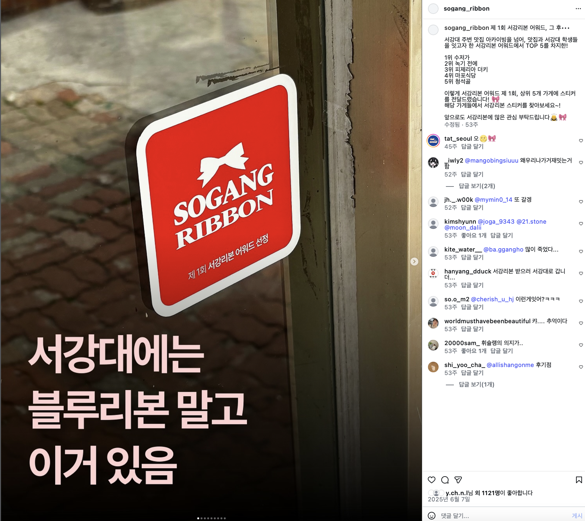
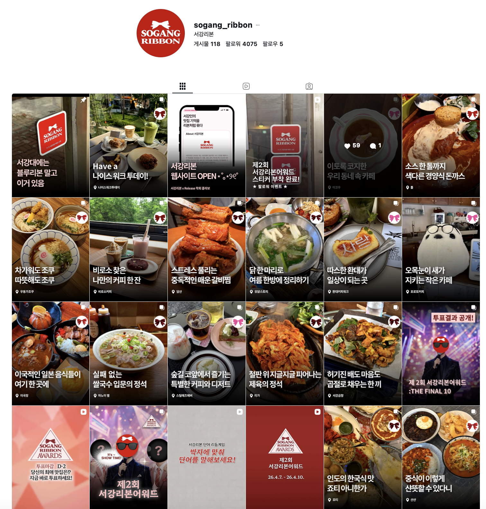

서강리본 Sogang Ribbon
서강리본은 학교 주변 로컬 브랜드와 학생 커뮤니티를 연결하는 콘텐츠 기반 프로젝트입니다. 브랜드의 매력을 학생들의 언어로 재해석하고, 협업 콘텐츠와 참여형 이벤트를 통해 로컬 브랜드가 더 자연스럽게 발견될 수 있는 접점을 만들었습니다.
로컬 브랜드 협업
브랜드의 핵심 매력, 공간 분위기, 대표 제품을 분석해 콘텐츠 방향을 설정했습니다. 단순 소개가 아니라 방문 이유와 CTA가 드러나는 협업 콘텐츠를 기획해 학생들이 브랜드를 실제로 경험하도록 연결했습니다.


리본 어워드 개최
학생들이 직접 참여할 수 있는 어워드 형식의 콘텐츠를 기획했습니다. 후보 선정, 투표 유도, 결과 발표까지 하나의 캠페인 흐름으로 구성해 커뮤니티 참여와 브랜드 노출을 동시에 강화했습니다.

인스타 콘텐츠 운영
주 2회 업로드를 기준으로 카드뉴스, 릴스, 스토리형 콘텐츠를 운영했습니다. 브랜드별 톤앤매너를 유지하면서도 학생들이 쉽게 반응할 수 있는 문장과 이미지 구성을 고민했습니다.

웹사이트 개설
흩어진 콘텐츠를 아카이빙하고 협업 브랜드를 더 명확하게 보여주기 위해 웹사이트를 개설했습니다. 브랜드 소개, 콘텐츠 기록, 프로젝트 흐름을 한 번에 확인할 수 있는 디지털 거점으로 설계했습니다.
Visit Website →